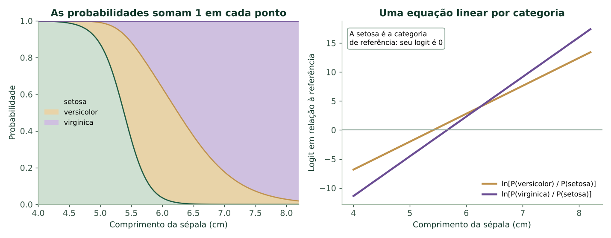
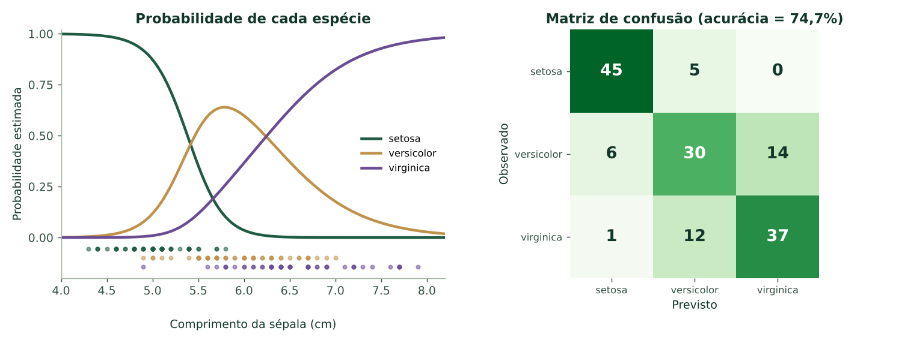

Regressão logística multinomial
Estima as probabilidades de três ou mais categorias sem ordem natural a partir de um ou mais preditores.
Comece por aqui
A regressão logística binária trata de respostas com dois resultados. E quando há três ou mais, sem ordem natural entre eles? Qual espécie é esta flor? Qual meio de transporte a pessoa escolheu? Qual tipo de defeito ocorreu? A logística multinomial responde a essas perguntas estimando, para cada categoria, a probabilidade de ela ser a escolhida.
Se as categorias forem ordenadas (baixo, médio, alto), a logística ordinal usa essa informação e estima menos parâmetros. Use a multinomial quando a ordem não existir ou não for razoável supô-la.
O que é o modelo
Escolhe-se uma categoria como referência (aqui, a categoria 1). Para cada uma das outras \(K-1\) categorias ajusta-se uma equação linear para o logaritmo da razão entre a probabilidade daquela categoria e a da referência:
As probabilidades são recuperadas de modo que somem 1. Com três categorias há duas equações; com cinco, quatro. É por isso que o modelo cresce rápido: cada categoria adicional traz um conjunto completo de coeficientes.

Pressupostos e como verificá-los
| Pressuposto | Por que importa | Como verificar |
|---|---|---|
| Resposta categórica com categorias exclusivas e exaustivas | Cada unidade pertence a uma e só uma categoria. | table(y). |
| Observações independentes | Dependência distorce erros-padrão. | Delineamento; para escolhas repetidas pela mesma pessoa, use modelos mistos. |
| Linearidade no logit para preditores quantitativos | O efeito de x é constante na escala do logit. | Proporções observadas por faixas de x; termos quadráticos ou splines. |
| Ausência de separação perfeita | Se um preditor separa completamente uma categoria, os coeficientes divergem. | Coeficientes e erros-padrão muito grandes; avisos de convergência. |
| Número suficiente de casos em cada categoria | Cada equação consome parâmetros. | Referência usual: ao menos 10 casos por parâmetro na categoria menos frequente. |
| Independência de alternativas irrelevantes (IIA) | A razão entre duas categorias não deveria mudar se uma terceira for retirada. | Teste de Hausman–McFadden; em dados de escolha, considere o logit aninhado. |
Hipóteses e estatística de teste
Em que:
- \(K\)
- número de categorias da resposta
- \(p\)
- número de preditores
- \(\eta_k\)
- preditor linear da categoria k; o da referência é fixado em zero
- \(b_{jk}\)
- estimativa de máxima verossimilhança do coeficiente de \(x_j\) na equação da categoria k
- \(\ell\)
- log-verossimilhança
- \(G\)
- estatística da razão de verossimilhanças, com \(p(K-1)\) graus de liberdade
- \(e^{b_{jk}}\)
- razão de chances: fator que multiplica a chance da categoria k frente à referência quando \(x_j\) aumenta uma unidade
Exemplo numérico, passo a passo
No exemplo desta ficha (\(K=3\), um preditor), os coeficientes são \(\eta_{versicolor}=-26{,}082+4{,}816x\) e \(\eta_{virginica}=-38{,}759+6{,}846x\), com \(x\) = comprimento da sépala.
\(\eta_{setosa}=0\) (referência); \(\eta_{versicolor}=-26{,}082+4{,}816(6)=2{,}814\); \(\eta_{virginica}=-38{,}759+6{,}846(6)=2{,}317\).
Exponenciais: \(e^0=1\); \(e^{2{,}814}=16{,}68\); \(e^{2{,}317}=10{,}15\). Soma \(=27{,}83\).
Probabilidades: \(1/27{,}83=0{,}036\); \(16{,}68/27{,}83=0{,}599\); \(10{,}15/27{,}83=0{,}365\) — a classificação prevista é versicolor.
Razão de chances da versicolor por \(+1\) cm: \(e^{4{,}816}=123{,}4\).
Propriedades
- As probabilidades estimadas são sempre positivas e somam 1.
- A escolha da categoria de referência não muda as probabilidades previstas nem o ajuste do modelo; muda apenas a leitura dos coeficientes.
- Com \(K=2\), o modelo é exatamente a regressão logística binária.
- Razões de chances entre duas categorias não referência saem da diferença dos coeficientes: \(e^{b_{jk}-b_{jm}}\).
- O modelo não supõe ordem: permutar os rótulos das categorias produz o mesmo ajuste.
- Os coeficientes são estimados por máxima verossimilhança, de forma conjunta para todas as equações.
Como interpretar os resultados
| Elemento | O que informa | Cuidado |
|---|---|---|
| Coeficiente b | Efeito no logit da categoria frente à referência. | Não é o efeito sobre a probabilidade daquela categoria. |
| exp(b) | Razão de chances frente à referência. | Muda se a referência mudar. |
| Valor-p de Wald | Contribuição do preditor naquela equação. | Com amostras pequenas, prefira o teste da razão de verossimilhanças. |
| Probabilidades previstas | A tradução mais útil do modelo. | Reporte-as em valores relevantes dos preditores. |
| Matriz de confusão | Capacidade de classificar. | Calculada nos dados do ajuste, é otimista. |
Um coeficiente positivo aumenta a chance daquela categoria frente à referência, mas a probabilidade final depende de todas as equações: ela pode até cair se outra categoria crescer mais depressa.
Como executar no R e em Python
Onde executar o código em Python
Não é preciso instalar nada: o Google Colab é um computador na nuvem, gratuito, que executa Python pelo navegador e já traz as bibliotecas usadas aqui (numpy, scipy e matplotlib).
multinom() pertence ao pacote nnet (VENABLES; RIPLEY, 2002), que acompanha a instalação padrão do R e só precisa ser carregado com library(nnet). A resposta deve ser um fator; o primeiro nível é a referência, e relevel() permite trocá-la. O summary() não imprime valores-p: eles são calculados a partir dos coeficientes e dos erros-padrão.
library(nnet)
modelo <- multinom(Species ~ Sepal.Length, data = iris)
summary(modelo)
exp(coef(modelo))
O código Python desta ficha faz as contas passo a passo com numpy e scipy, para que cada resultado possa ser acompanhado. No dia a dia, a biblioteca statsmodels, também disponível no Google Colab, oferece esses modelos prontos.
Exemplo de aplicação
Contexto dos dados
O conjunto iris traz quatro medidas de 150 flores de três espécies. Usamos apenas o comprimento da sépala para prever a espécie. A escolha é proposital: as medidas da pétala separariam as espécies quase perfeitamente, e com isso o modelo não convergiria, situação discutida ao final.
Código em R
# Regressão logística multinomial: exemplo completo ----
# Pacote: nnet. Instale uma única vez: install.packages("nnet")
library(nnet)
# 1. Dados: iris (150 flores de 3 espécies); preditor = comprimento da sépala
dados <- iris[, c("Sepal.Length", "Species")]
aggregate(Sepal.Length ~ Species, data = dados, FUN = function(v) c(n = length(v), media = mean(v), dp = sd(v)))
# 2. Ajuste (a primeira categoria do fator, setosa, é a referência)
modelo <- multinom(Species ~ Sepal.Length, data = dados)
summary(modelo)
# 3. Testes de Wald (o multinom não imprime os valores-p)
z <- summary(modelo)$coefficients / summary(modelo)$standard.errors
round(2 * pnorm(abs(z), lower.tail = FALSE), 5)
# 4. Razões de chances e intervalos de confiança de 95%
exp(coef(modelo))
exp(confint(modelo))
# 5. Teste da razão de verossimilhanças contra o modelo nulo
nulo <- multinom(Species ~ 1, data = dados)
anova(nulo, modelo)
# 6. Probabilidades estimadas
novo <- data.frame(Sepal.Length = c(4.5, 5.0, 5.5, 6.0, 6.5, 7.5))
cbind(novo, round(predict(modelo, novo, type = "probs"), 3))
# 7. Classificação nos próprios dados (medida otimista)
tabela <- table(observado = dados$Species, previsto = predict(modelo))
tabela; sum(diag(tabela)) / sum(tabela)
# 8. Separação perfeita: com o comprimento da pétala as estimativas divergem
# multinom(Species ~ Petal.Length, data = iris) # observe a magnitude dos coeficientes
# 9. Gráfico: probabilidades estimadas
grade <- data.frame(Sepal.Length = seq(4, 8.2, length.out = 200))
P <- predict(modelo, grade, type = "probs")
matplot(grade$Sepal.Length, P, type = "l", lty = 1, lwd = 2,
xlab = "Comprimento da sépala (cm)", ylab = "Probabilidade estimada")
legend("left", legend = levels(iris$Species), col = 1:3, lty = 1, lwd = 2, bty = "n")
A mesma análise em Python, com os resultados
Cole o código em um notebook do Google Colab ↗ e execute com Shift+Enter. Os valores abaixo são a saída desse código.
# Bibliotecas: numpy, scipy e matplotlib (já instaladas no Google Colab)
import numpy as np
from scipy import stats, optimize
import matplotlib.pyplot as plt
from sklearn.datasets import load_iris
def multinom(X, y, K, nomes):
"""Logística multinomial por máxima verossimilhança; a classe 0 é a referência."""
n = len(y); Xd = np.column_stack([np.ones(n), X]); q = Xd.shape[1]
def menos_logv(b):
B = np.vstack([np.zeros(q), b.reshape(K - 1, q)])
eta = Xd @ B.T; m = eta.max(axis=1, keepdims=True)
return -np.sum(eta[np.arange(n), y] - m.ravel() - np.log(np.exp(eta - m).sum(axis=1)))
res = optimize.minimize(menos_logv, np.zeros((K - 1) * q), method="BFGS")
H = hessiana(menos_logv, res.x); ep = np.sqrt(np.diag(np.linalg.inv(H)))
b = res.x; z = b / ep; p = 2 * stats.norm.sf(np.abs(z))
print(f"{'Equação':<26}{'Estimativa':>11}{'Erro-padrão':>13}{'z':>8}{'p-valor':>10}{'OR':>9}")
for i, nm in enumerate(nomes):
for j, termo in enumerate(["(Intercepto)"] + [f"x{j}" for j in range(1, q)]):
k = i * q + j
print(f"{nm + ': ' + termo:<26}{b[k]:>11.4f}{ep[k]:>13.4f}{z[k]:>8.3f}{p[k]:>10.4f}{np.exp(b[k]):>9.3f}")
return dict(b=b, ep=ep, logv=-res.fun, q=q, K=K, Xd=Xd)
def hessiana(f, x, h=1e-4):
"""Matriz hessiana por diferenças finitas centrais."""
p = len(x); H = np.zeros((p, p))
for i in range(p):
for j in range(p):
e1 = np.zeros(p); e2 = np.zeros(p); e1[i] = h; e2[j] = h
H[i, j] = (f(x+e1+e2) - f(x+e1-e2) - f(x-e1+e2) + f(x-e1-e2)) / (4 * h * h)
return H
def probs(m, X):
Xd = np.column_stack([np.ones(len(X)), X])
B = np.vstack([np.zeros(m["q"]), m["b"].reshape(m["K"] - 1, m["q"])])
eta = Xd @ B.T; e = np.exp(eta - eta.max(axis=1, keepdims=True))
return e / e.sum(axis=1, keepdims=True)
# 1. Dados: iris (150 flores de 3 espécies); preditor = comprimento da sépala (cm)
iris = load_iris(); especies = list(iris.target_names)
x = iris.data[:, 0]; y = iris.target; n = len(y)
for j, nome in enumerate(especies):
print(f"{nome:<11} n = {np.sum(y == j)} | média = {x[y == j].mean():.3f} | DP = {x[y == j].std(ddof=1):.3f} | faixa = {x[y == j].min()}-{x[y == j].max()}")
# 2. Ajuste: setosa é a categoria de referência
m = multinom(x[:, None], y, 3, ["versicolor", "virginica"])
print(f"\nLog-verossimilhança = {m['logv']:.4f} | AIC = {-2 * m['logv'] + 2 * len(m['b']):.3f}")
# 3. Modelo nulo e teste da razão de verossimilhanças
props = np.bincount(y) / n
logv0 = np.sum(np.bincount(y) * np.log(props))
G = 2 * (m["logv"] - logv0)
print(f"Modelo nulo: log-verossimilhança = {logv0:.4f} | G = {G:.3f}, gl = 2, p-valor = {stats.chi2.sf(G, 2):.3e}")
print(f"Pseudo-R² de McFadden = {1 - m['logv'] / logv0:.4f}")
# 4. Probabilidades estimadas em alguns comprimentos
print("\nComprimento setosa versicolor virginica")
for x0 in [4.5, 5.0, 5.5, 6.0, 6.5, 7.5]:
p = probs(m, np.array([[x0]]))[0]
print(f"{x0:>9.1f} cm {p[0]:>8.3f} {p[1]:>11.3f} {p[2]:>10.3f}")
# 5. Classificação (nos próprios dados do ajuste: medida otimista)
P = probs(m, x[:, None]); pred = P.argmax(axis=1)
print("\nMatriz de confusão (linhas = observado, colunas = previsto):")
conf = np.array([[np.sum((y == i) & (pred == j)) for j in range(3)] for i in range(3)])
print(conf); print(f"Acurácia = {np.mean(pred == y):.4f} | acerto esperado ao acaso = 0.3333")
# 6. Razão de chances para um aumento de 1 cm
print("\nOR (chance da espécie em relação à setosa, por +1 cm de sépala):")
zc = stats.norm.ppf(0.975)
for i, nome in enumerate(["versicolor", "virginica"]):
k = i * m["q"] + 1
print(f"{nome:<11} OR = {np.exp(m['b'][k]):8.3f} IC 95% = [{np.exp(m['b'][k] - zc*m['ep'][k]):.3f}; {np.exp(m['b'][k] + zc*m['ep'][k]):.3f}]")
# 7. O que acontece com separação perfeita (o comprimento da pétala separa a setosa)
Xp = np.column_stack([np.ones(n), iris.data[:, 2]])
def menos_logv_petala(b):
B = np.vstack([np.zeros(2), b.reshape(2, 2)]); eta = Xp @ B.T
m_ = eta.max(axis=1, keepdims=True)
return -np.sum(eta[np.arange(n), y] - m_.ravel() - np.log(np.exp(eta - m_).sum(axis=1)))
rp = optimize.minimize(menos_logv_petala, np.zeros(4), method="BFGS")
print(f"\nCom o comprimento da pétala: maior coeficiente em valor absoluto = {np.abs(rp.x).max():.1f}")
print("As estimativas crescem sem limite a cada iteração: é o sintoma de separação perfeita.")
# 8. Gráfico: probabilidades estimadas de cada espécie
grade = np.linspace(4, 8.2, 200)
P = probs(m, grade[:, None])
for j, nome in enumerate(especies): plt.plot(grade, P[:, j], label=nome)
plt.xlabel("Comprimento da sépala (cm)"); plt.ylabel("Probabilidade estimada"); plt.legend(); plt.show()
Resultados da execução
setosa n = 50 | média = 5.006 | DP = 0.352 | faixa = 4.3-5.8
versicolor n = 50 | média = 5.936 | DP = 0.516 | faixa = 4.9-7.0
virginica n = 50 | média = 6.588 | DP = 0.636 | faixa = 4.9-7.9
Equação Estimativa Erro-padrão z p-valor OR
versicolor: (Intercepto) -26.0819 4.8893 -5.335 0.0000 0.000
versicolor: x1 4.8157 0.9068 5.310 0.0000 123.432
virginica: (Intercepto) -38.7590 5.6907 -6.811 0.0000 0.000
virginica: x1 6.8464 1.0222 6.698 0.0000 940.485
Log-verossimilhança = -91.0340 | AIC = 190.068
Modelo nulo: log-verossimilhança = -164.7918 | G = 147.516, gl = 2, p-valor = 9.276e-33
Pseudo-R² de McFadden = 0.4476
Comprimento setosa versicolor virginica
4.5 cm 0.988 0.012 0.000
5.0 cm 0.873 0.118 0.009
5.5 cm 0.353 0.529 0.117
6.0 cm 0.036 0.598 0.366
6.5 cm 0.002 0.372 0.626
7.5 cm 0.000 0.072 0.928
Matriz de confusão (linhas = observado, colunas = previsto):
[[45 5 0]
[ 6 30 14]
[ 1 12 37]]
Acurácia = 0.7467 | acerto esperado ao acaso = 0.3333
OR (chance da espécie em relação à setosa, por +1 cm de sépala):
versicolor OR = 123.432 IC 95% = [20.870; 730.014]
virginica OR = 940.485 IC 95% = [126.833; 6973.839]
Com o comprimento da pétala: maior coeficiente em valor absoluto = 232.9
Log-verossimilhança = -16.7160 (tende a zero) -> separação perfeita: as estimativas divergem.
| Equação | Estimativa | Erro-padrão | z | Valor-p | OR |
|---|---|---|---|---|---|
| versicolor: intercepto | −26,082 | 4,889 | −5,335 | < 0,0001 | — |
| versicolor: sépala | 4,816 | 0,907 | 5,310 | < 0,0001 | 123,4 |
| virginica: intercepto | −38,759 | 5,691 | −6,811 | < 0,0001 | — |
| virginica: sépala | 6,846 | 1,022 | 6,698 | < 0,0001 | 940,5 |
| Elemento | Valor | Leitura |
|---|---|---|
| Log-verossimilhança | −91,034 | Modelo nulo: −164,792. |
| Teste da razão de verossimilhanças | G = 147,52; 2 g.l.; p = 9,3 × 10⁻³³ | O comprimento da sépala informa muito sobre a espécie. |
| AIC | 190,07 | |
| Pseudo-R² de McFadden | 0,448 | |
| OR da versicolor por +1 cm | 123,4 [20,9; 730,0] | Intervalo largo: um preditor só, e muito informativo. |
| OR da virginica por +1 cm | 940,5 [126,8; 6973,8] | |
| Acurácia | 74,7% | Contra 33,3% esperados ao acaso. |
| Comprimento da sépala | setosa | versicolor | virginica |
|---|---|---|---|
| 4,5 cm | 0,988 | 0,012 | 0,000 |
| 5,0 cm | 0,873 | 0,118 | 0,009 |
| 5,5 cm | 0,353 | 0,529 | 0,117 |
| 6,0 cm | 0,036 | 0,598 | 0,366 |
| 6,5 cm | 0,002 | 0,372 | 0,626 |
| 7,5 cm | 0,000 | 0,072 | 0,928 |
Leitura: sépalas curtas indicam setosa; longas, virginica; a faixa intermediária é ambígua, e é ali que estão quase todos os erros de classificação (14 virginicas previstas como versicolor e 12 no sentido contrário). As razões de chances são enormes porque 1 cm é uma variação grande para esta variável, cujo desvio-padrão é cerca de 0,8 cm.
Ao repetir o ajuste com o comprimento da pétala, o maior coeficiente em valor absoluto passa de 39 para 233 e continua crescendo a cada iteração: é o sintoma de separação perfeita. Nenhuma flor setosa tem pétala maior que 1,9 cm e nenhuma das outras espécies tem menos de 3,0 cm, de modo que a verossimilhança não tem máximo finito. O modelo acerta tudo e, ainda assim, não deve ser usado: os erros-padrão não existem.
Erros comuns
| Erro | Como evitar |
|---|---|
| Usar a multinomial com resposta ordenada | Perde informação e estima parâmetros demais; use a logística ordinal. |
| Esquecer qual é a categoria de referência | Todo coeficiente é relativo a ela; informe-a sempre. |
| Ler o coeficiente como efeito sobre a probabilidade | O efeito é sobre a chance frente à referência. |
| Ignorar avisos de convergência | Em geral indicam separação perfeita ou categoria muito rara. |
| Muitas categorias e poucos dados | Agrupe categorias raras antes de ajustar. |
| Avaliar a acurácia nos dados do ajuste | Use treino–teste ou validação cruzada. |
| Supor a independência de alternativas irrelevantes sem pensar | Em dados de escolha com alternativas parecidas, o pressuposto costuma falhar. |
Alternativas e fluxo de trabalho
| Procedimento | Quando preferir |
|---|---|
| Logística ordinal | Categorias com ordem natural. |
| Logística binária | Apenas duas categorias, ou agrupamento em duas. |
| Análise discriminante linear / quadrática | Preditores aproximadamente normais em cada grupo; amostras pequenas. |
| Árvores e random forests | Relações complexas e foco em previsão. |
| Naive Bayes | Muitos preditores e amostra pequena. |
| Logit aninhado ou condicional | Dados de escolha discreta com alternativas correlacionadas. |
- Verifique a frequência de cada categoria e escolha a referência.
- Explore a relação de cada preditor com as categorias.
- Ajuste o modelo e cheque a convergência.
- Interprete por probabilidades previstas, não só por coeficientes.
- Avalie a classificação em dados não usados no ajuste.
Referências desta ficha
- AGRESTI, Alan. Categorical data analysis. 3. ed. Hoboken: Wiley, 2013.
- HOSMER, David W.; LEMESHOW, Stanley; STURDIVANT, Rodney X. Applied logistic regression. 3. ed. Hoboken: Wiley, 2013.
- VENABLES, William N.; RIPLEY, Brian D. Modern applied statistics with S. 4. ed. New York: Springer, 2002. (Pacotes
nneteMASS.) - McFADDEN, Daniel. Conditional logit analysis of qualitative choice behavior. In: ZAREMBKA, Paul (ed.). Frontiers in econometrics. New York: Academic Press, 1974. p. 105-142.
- ALBERT, Adelin; ANDERSON, J. A. On the existence of maximum likelihood estimates in logistic regression models. Biometrika, v. 71, n. 1, p. 1-10, 1984. (Separação perfeita.)
- FISHER, Ronald A. The use of multiple measurements in taxonomic problems. Annals of Eugenics, v. 7, n. 2, p. 179-188, 1936. (Conjunto de dados
iris, pacotedatasetsdo R.) - ANDERSON, Edgar. The irises of the Gaspé Peninsula. Bulletin of the American Iris Society, v. 59, p. 2-5, 1935.
- PEDREGOSA, Fabian et al. Scikit-learn: machine learning in Python. Journal of Machine Learning Research, v. 12, p. 2825-2830, 2011. (Função
sklearn.datasets.load_iris.) - R CORE TEAM. R: a language and environment for statistical computing. Vienna: R Foundation for Statistical Computing, 2026. Disponível em: https://www.r-project.org/.
- POSIT TEAM. RStudio: integrated development environment for R. Boston: Posit Software, PBC. Disponível em: https://posit.co/download/rstudio-desktop/.
- VIRTANEN, Pauli et al. SciPy 1.0: fundamental algorithms for scientific computing in Python. Nature Methods, v. 17, p. 261-272, 2020. DOI: 10.1038/s41592-019-0686-2. (Funções do módulo
scipy.stats.) - HARRIS, Charles R. et al. Array programming with NumPy. Nature, v. 585, p. 357-362, 2020. DOI: 10.1038/s41586-020-2649-2.
- HUNTER, John D. Matplotlib: a 2D graphics environment. Computing in Science & Engineering, v. 9, n. 3, p. 90-95, 2007.
- GOOGLE. Google Colaboratory. Disponível em: https://colab.research.google.com/.
- As figuras desta ficha foram elaboradas pelo autor.

Prof. Dr. Cássius Henrique Xavier Oliveira
Professor · ICTIN/UFLA · Estatística, Confiabilidade e Ciência de Dados.
Conheça minha trajetória e projetos →